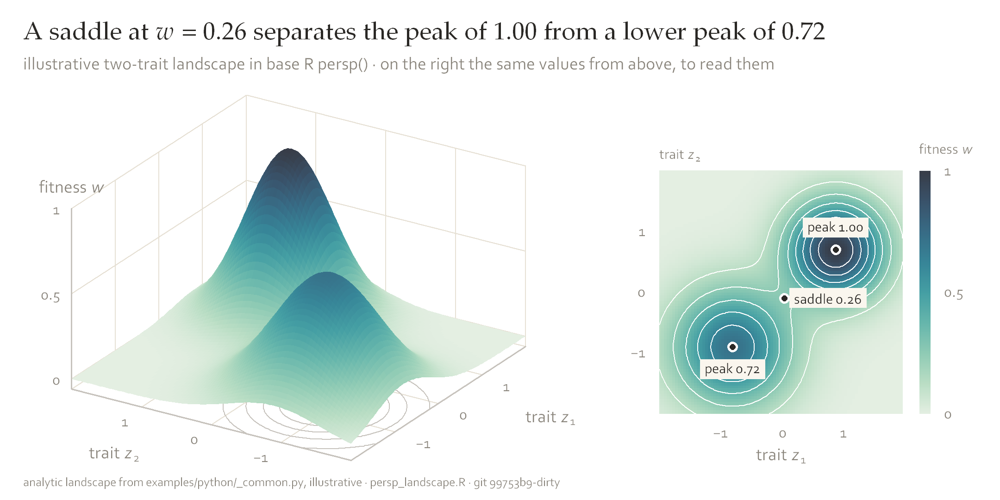
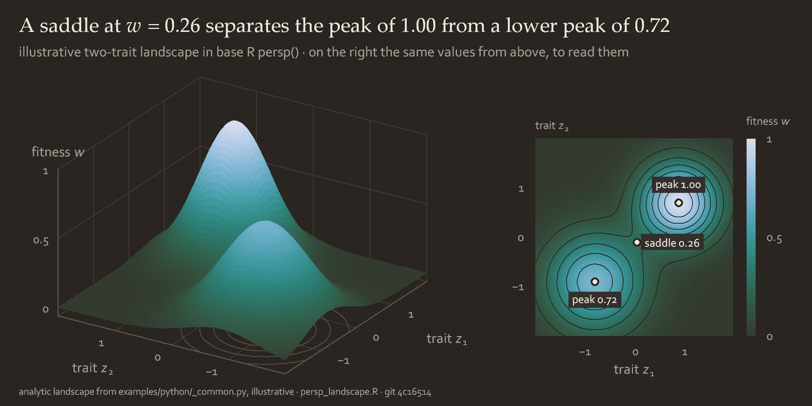
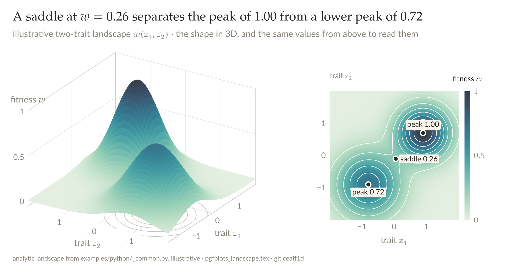
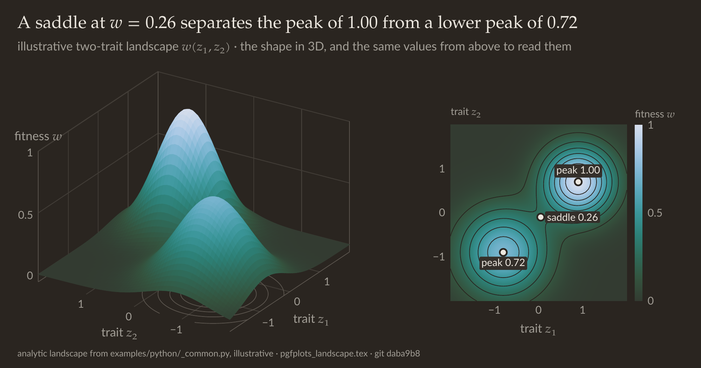

Tools
Pipeline


To rebuild the style files:
cd generators
python build_palettes.py palettes.json # the seeded search (about 3 minutes)
python make_vellum_json.py ../style/vellum.json
python make_assets.py ../style/vellum.json ../style
git diff --stat ../style # nothing: the files are reproduced exactlyDownloads
| file | for | what it holds |
|---|---|---|
vellum.json | everything | every colour of both twins, the slot order, semantic slots, gradients, fonts, mark sizes and type sizes. The source of truth. |
vellum.py | matplotlib | vellum.use("light") sets the rcParams and returns the palette with the anatomy as helper functions |
vellum.mplstyle | matplotlib | the light rcParams alone, for plt.style.use |
vellum.R | R, ggplot2 | theme_vellum(), colour and fill scales, gradients, a ringed point and end labels |
vellum-colors.sty | LaTeX | 134 xcolor names (both twins and the gradient stops), the pgfplots styles and colormaps, TikZ node styles, \vellumbeamer and \vellumbeamerdark |
vellum.css | web, Obsidian | the palette and gradients as --v-* CSS variables, light and dark |
vellum-office.tsv | Office, Canva, Google | every colour as hex and RGB triplets, light and dark, with the gradient stops |
vellum-style.zip | all of the above | the seven files in one archive |
matplotlib
use sets the rcParams; the helpers draw the anatomy.
| helper | does |
|---|---|
V.tone(k) V.tint(k) V.deep(k) | colours by slot index or family name |
V.title(fig, claim, subtitle, source) | the title block and the footer |
V.panel(ax, "a", claim, unit=...) | panel letter and claim; the unit line in place of the y label |
V.endlabels(ax, points, texts, gap) | end labels pushed apart, with leaders |
V.dot V.reference V.identity V.note V.callout | ringed markers, dotted reference lines, y = x, quiet notes, callouts |
V.heat_gaps V.gradient_bar V.cmap_gradient("lagoon") | heat maps with surface gaps and a legend bar on a named gradient |
V.axes3d V.surface3d | orthographic 3D axes at elevation 24°, azimuth −58°, and a flat-shaded, rasterised surface with floor contours |
V.size("double") vellum.stamp() | the named sizes; the git sha with -dirty |
import vellum
V = vellum.use("light") # "dark"; scale=2.2 slides, 2.6 posters
# a paper figure: no title block, the claim goes in the caption
plt.rcParams["lines.linewidth"] = 1.2
fig, axes = plt.subplots(1, 3, figsize=V.size("double"))
for ax, letter in zip(axes, "abc"):
V.panel(ax, letter, None, unit="beak depth, mm")
# a heat map on a gradient
im = ax.imshow(M, cmap=V.cmap_gradient("lagoon"), vmin=0, vmax=6)
V.heat_gaps(ax, nx, ny)
V.gradient_bar(fig, im, ax, "log10 of deaths", ticks=[0, 2, 4, 6])
# a surface and its twin
ax3 = V.axes3d(fig, rect=(0, 0.02, 0.55, 0.74), labels=("z1", "z2", "w"))
V.surface3d(ax3, Z1, Z2, W, cmap=V.cmap_gradient("lagoon"))Examples: examples/python/.
R and ggplot2


Add theme_vellum() and the scales; claim in labs(title), unit in labs(subtitle).
- End labels:
expansion(mult = c(0, 0.32))on x. - Highlight:
values = c(rest = vellum$rule, focus = vellum$tone[2]). - Error bars:
geom_errorbar(width = 0, colour = vellum$secondary, linewidth = vellum$thin). - Heat map:
geom_tile(colour = vellum$surface, linewidth = 0.4)withscale_fill_vellum_grad("lagoon"). - 3D: base
persp.




LaTeX: pgfplots, TikZ, beamer
Load after TikZ and pgfplots.
- Colours:
vteal…vmoss,vtealTint,vtealDeep,vSurface…vInk; dark twin addsD(vtealD). Do not mix with!. - Axes:
vellum,vellum 3d(z buffer=sorton the surface only),vellum dark,vellum 3d dark. The axistitleis the unit line. - Colormaps:
vellum lagoon,vellum ember,vellum shore, the single families, each withdark. - TikZ:
vellum box,vellum box tint=<family>,vellum arrow,vellum guide,vellum label,vellum claim;\vellumtikzdark.
\node[vellum box tint=indigo] (a) {source\\ the data};
\node[vellum box tint=teal, right=1cm of a] (b) {script\\ draws the figure};
\draw[vellum arrow] (a) -- node[vellum label, above] {reads} (b);





Beamer: \vellumbeamer or \vellumbeamerdark, as in the talk deck and poster.
TikZ: ecological models
Three models drawn entirely in TikZ and pgfplots with vellum-colors.sty; the numbers are computed in Python and typeset as macros.


![a: the seven-stage life cycle of loggerhead turtles, from eggs and hatchlings to mature breeders, with arrows for staying, growing and reproducing, each as wide as its elasticity of λ; staying as a mature breeder has the largest, 0.230. b: the elasticities summed by stage. c: λ when the annual survival of one stage is raised: even 100 % survival of eggs and hatchlings gives λ = 0.965, while λ reaches 1 with 17 % better survival of mature breeders, 20 % of small juveniles, 24 % of subadults or 27 % of large juveniles.](figures/tools/tikz_loggerhead_light.png)
![a: the seven-stage life cycle of loggerhead turtles, from eggs and hatchlings to mature breeders, with arrows for staying, growing and reproducing, each as wide as its elasticity of λ; staying as a mature breeder has the largest, 0.230. b: the elasticities summed by stage. c: λ when the annual survival of one stage is raised: even 100 % survival of eggs and hatchlings gives λ = 0.965, while λ reaches 1 with 17 % better survival of mature breeders, 20 % of small juveniles, 24 % of subadults or 27 % of large juveniles.](figures/tools/tikz_loggerhead_dark.png)
Web
vellum.css: colours as --v-* variables, dark values under [data-theme="dark"].
vellum-web.js: SVG helpers (axes, dot, reference, endLabels, tooltip) and colour functions; no dependencies.
import * as V from "./vellum-web.js";
const node = document.querySelector("#co2");
const plot = V.frame(node, { title: "Carbon dioxide rose every year since 1959",
subtitle: "Mauna Loa, annual mean", footer: "NOAA GML · co2.js" });
V.responsive(plot, (width, P) => { // redraws on resize and when the twin flips
V.clear(plot);
const s = V.svg(plot, width, 320), g = V.el("g", { transform: "translate(44,28)" }, s);
const x = V.linear([1959, 2019], [0, width - 140]), y = V.linear([300, 420], [248, 0]);
V.axes(g, P, { x, y, xticks: [1960, 1990, 2019], yticks: [300, 350, 400],
xfmt: V.year, unit: "parts per million", width: width - 140, height: 248 });
V.line(g, rows.map((r) => [x(r.year), y(r.ppm)]), P.tone[0]);
V.reference(g, P, { y: y(350), x1: 0, x2: width - 140, label: "350 ppm" });
});Office, Canva, Excalidraw, Google
Ready-made templates: vellum-slides-light.pptx and vellum-slides-dark.pptx, with the theme, ten layouts and example slides. Canva: drag the file in to import it. Preview.
PowerPoint and Word
- Design → Variants → Colors → Customize. Dark 1 ink
2A2825, Light 1 surfaceFFFFFF, Dark 2 secondary5A5650, Light 2 cardFAF6EE. - Accents 1–6, tones in slot order:
419BA0A1644F415688806629AD78A1567E4D. Hyperlink:415688. - Fonts: Palatino Linotype headings, Corbel body. Save as
Vellum.thmx. - Charts: gridlines
E6E0D4at 0.5 pt, no border or vertical gridlines, labels at line ends, no fill.
Canva
- Brand Kit → Colors: neutrals, tones and tints from
vellum-office.tsv. - Fonts: Palatino Linotype (else EB Garamond) headings, Lato body.
- Import figures as PNGs at the format's pixel size.
Excalidraw
Roughness 0. Boxes: 1 px #5A5650 stroke, card or tint fill. Text: ink, 16 px. Guides: dotted #C7C3BD.
Google Docs and Slides, Excel
Colours from the TSV; Lato body, EB Garamond headings. Tables: ink header on card, alternate rows in card.
No gradient fills on shapes or text, and no Office or Canva 3D charts; use PNGs from matplotlib or R.